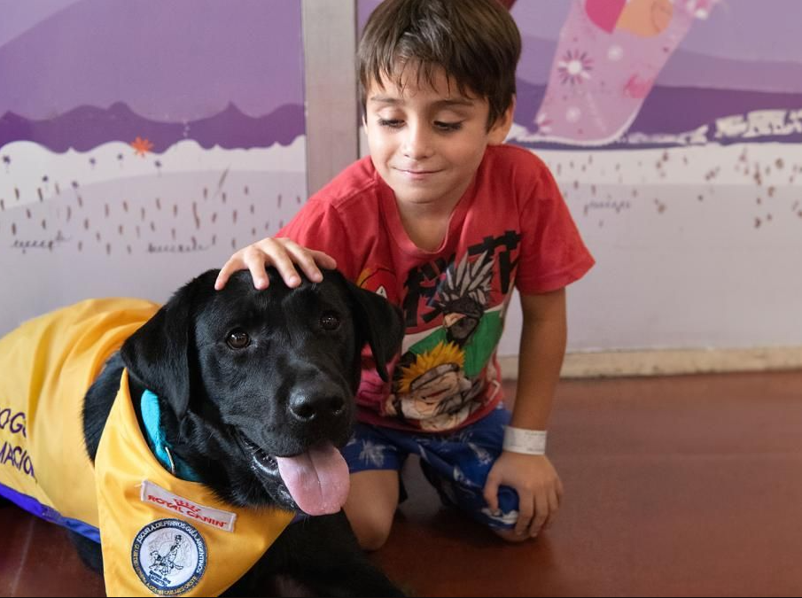

POSTULARME COMO VOLUNTARIO
En el CAAN hay muchas tareas por hacer, si quieres ser voluntario, estos son los requisitos:
Amor
por los
animales: Lo más esencial.
Disponibilidad de
tiempo: Aunque cualquier tiempo que
puedas dedicar es valioso, es importante ser realista sobre cuánto tiempo puedes
comprometer.
Compromiso y
responsabilidad: Necesitamos voluntarios
comprometidos y responsables que puedan cumplir con sus responsabilidades.
Comunicación
abierta: La comunicación es clave. Debes
estar dispuesto/a a informar sobre el progreso, cualquier problema o cambio en tu
disponibilidad.
Colaboración: Trabajar en equipo es esencial. Colaboramos
para garantizar el bienestar de todos nuestros animales y el sano funcionamiento de la
ONG.
Compromiso a largo
plazo: Buscamos voluntarios comprometidos
a largo plazo, ya que la continuidad es crucial.
POSTULARME COMO HOGAR DE TRANSITO
Puede que no estés en condiciones de adoptar un perro de manera permanente, pero sí podés ofrecer un espacio temporal para un animal en recuperación o brindar un hogar temporal a cachorros hasta que encuentren su hogar definitivo.Tu aporte será esencial en la vida de ese animal.
Lo que se necesita para ser un hogar de transito es:
Disponibilidad de
tiempo: Deben estar dispuestos a dedicar tiempo para el cuidado, socialización
y atención de los animales a su cargo.
Espacio y ambiente
adecuados: Deben tener un espacio en su
hogar que sea seguro y apropiado para el animal según sus necesidades.
Flexibilidad: Deben
ser flexibles y comprensivos con los
cambios en su rutina que pudieran surgir relacionados al cuidado del animal a su
cargo.
